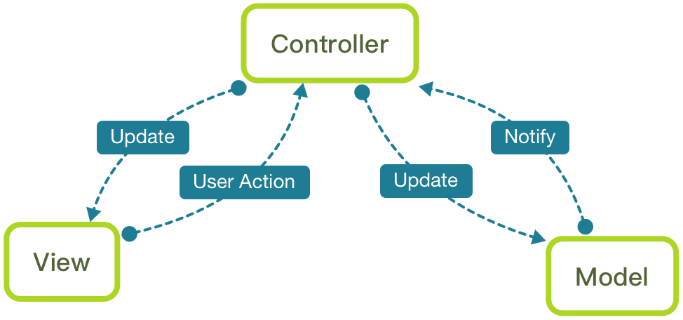
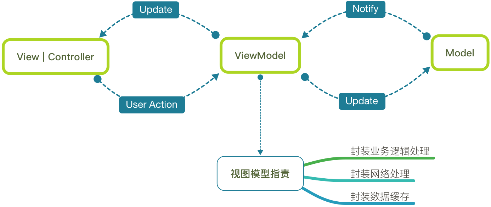

MVVM 是 Model-View-ViewModel 的简写，MVVM 模式和 MVC 模式一样，主要目的是分离视图（View）和模型（Model）


MVVM 概念
view 和 view controller 正式联系在一起，我们把它们视为一个组件view 和 view controller 都不能直接引用 model，而是引用视图模型view model 是一个放置用户输入验证逻辑，视图显示逻辑，发起网络请求和其他代码MVVM 使用注意事项
view 引用 view model，但反过来不行view model 引用了 model，但反过来不行View 可以独立于 Model 变化和修改，一个 ViewModel 可以绑定到不同的 View 上ViewModel 里面，让很多 view 重用这段视图逻辑ViewModel，设计人员可以专注于页面设计ViewModel 来进行测试